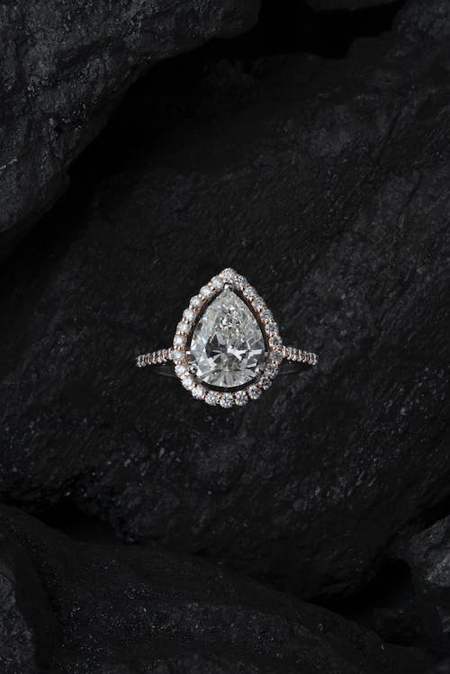
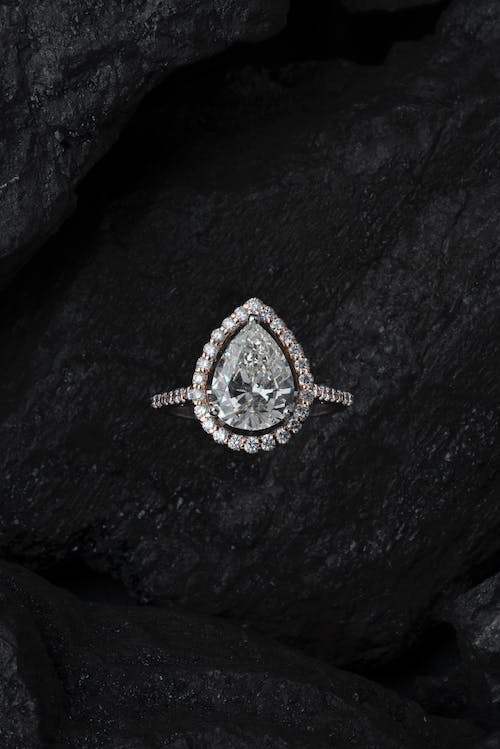

ornamental pieces (such as rings, necklaces, earrings, and bracelets) that are made of materials which may or may not be precious (such as gold, silver, glass, and plastic), are often set with genuine or imitation gems, and are worn for personal adornment.
More than just an accessory, jewelry can also be a symbol of power and status. Women have worn jewelry for many years to show how important or wealthy they are. Today, jewelry can still be seen as a sign of success. But it can also be a meaningful way to express your individuality.